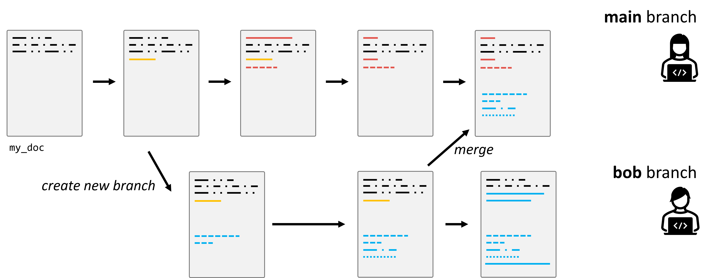

3. Versionskontrolle mit Git#
3.1. Motivation#
Sicherlich erinnert sich jeder an Zeiten, in denen man an einem größeren Dokument oder Programmcode arbeitete und unterschiedliche Versionen unter diversen Namen speicherte: “Projekt_Final”, “Projekt_Final_v2”, “Projekt_EchtJetztFinal”. Das mag auf den ersten Blick praktikabel erscheinen, insbesondere wenn man allein an einem Projekt arbeitet. (Und, keine Sorge, das hat jede/r von uns schon so gemacht!)
Doch die Realität zeigt, dass diese Methode zahlreiche Fallstricke birgt:
Unübersichtlichkeit: Schnell sammeln sich viele Dateiversionen an, und es wird zunehmend schwerer, den Überblick zu behalten.
Verwirrung: Es ist unklar, welche Änderungen in welcher Dateiversion vorgenommen wurden, vor allem wenn klare Benennungskonventionen fehlen.
Teamarbeit: In Projekten, in denen mehrere Personen beteiligt sind, wird dieser Ansatz rasch unpraktikabel. Wie stellt man sicher, dass jeder Zugriff auf die neueste Version hat? Wie kombiniert man die Änderungen mehrerer Personen?
Der letzte Punkt ist besonders problematisch, wenn Teammitglieder asynchron arbeiten, d.h., nicht gleichzeitig oder an verschiedenen Orten. Das manuelle Zusammenführen (oder “Mergen”) von Dateien kann zu Fehlern führen, Überschneidungen verursachen und ist sehr zeitaufwändig. Einige Änderungen könnten sogar verloren gehen oder überschrieben werden.

Hier kommt die Versionskontrolle ins Spiel! Sie stellt eine elegante Lösung für diese Herausforderungen dar und ermöglicht es Einzelpersonen und Teams, effizienter und fehlerfreier zu arbeiten.

3.2. Warum Versionskontrolle (version control)?#
Die Versionskontrolle ermöglicht es uns, den Verlauf und die Entwicklung eines Projekts zu verfolgen und zu steuern. Zu den Hauptvorteilen gehören:
Aufzeichnen von Änderungen: Sie können genau sehen, welche Änderungen wann und von wem vorgenommen wurden.
Vergleich von Versionen: Wenn Sie wissen wollen, was zwischen zwei Versionen geändert wurde, können Sie das einfach herausfinden.
Einfaches Teilen: Sie können Ihre Arbeit mit anderen teilen, und diese können ihre Änderungen mit Ihnen teilen.
Mergen von Änderungen: Kombinieren Sie die Arbeit von mehreren Personen in einem zentralen Projekt.
Tags für Releases: Markieren Sie bestimmte Punkte in der Geschichte Ihres Projekts als offizielle Releases oder Versionen.
Experimentieren ohne Risiko: Mit Branches können Sie neue Ideen ausprobieren, ohne die Hauptversion Ihres Projekts zu beeinflussen.
Industriestandard: Fast alle professionellen Software- und Datenprojekte verwenden eine Art von Versionskontrolle.
Achtung: Es ist wichtig zu betonen, dass Versionskontrolle nicht dasselbe ist wie ein Backup. Obwohl Sie zu früheren Versionen zurückkehren können, ersetzt dies nicht die Notwendigkeit von Backups für Datenverlustszenarien.
3.3. Einführung in Git#
Git wurde 2005 von Linus Torvalds initiiert, ursprünglich als Werkzeug zur Versionskontrolle für die Entwicklung des Linux-Kernels. Es hat sich jedoch schnell zu einem der am weitesten verbreiteten Versionskontrollsysteme weltweit entwickelt und ist heute der Standard im Software- und IT-Bereich.
3.3.1. Ziele von Git#
Git wurde mit einigen zentralen Zielen im Hinterkopf entwickelt, darunter:
Sicherheit: Jede Änderung wird sicher und nachvollziehbar gespeichert, sodass der gesamte Verlauf der Änderungen lückenlos dokumentiert ist.
Effizienz: Git ist darauf optimiert, effizient auch mit großen Projekten und vielen Änderungen zu arbeiten.
3.3.2. Komplex, aber nur das Nötigste#
Obwohl Git sehr mächtig und komplex ist, benötigen die meisten Benutzer*innen nur eine Handvoll grundlegender Funktionen. Diese Kernfunktionen ermöglichen es, Git produktiv zu nutzen, ohne sich mit den tieferen technischen Details auseinandersetzen zu müssen.
3.3.3. Der Standard in der Softwareentwicklung#
In der heutigen Softwareentwicklung ist Git das zentrale Werkzeug für Versionskontrolle. Andere Systeme spielen in der Praxis kaum noch eine Rolle und werden in professionellen Umgebungen selten verwendet. Das bedeutet, dass Git-Kenntnisse in den meisten IT-Berufen und Softwareprojekten unerlässlich sind.
3.4. Wie funktioniert Git?#
Git speichert nicht einfach vollständige Kopien von Dateien. Stattdessen konzentriert es sich auf die Unterschiede, die sogenannten “Deltas”, zwischen verschiedenen Versionen von Dateien. Dies macht Git besonders effizient, da nur die Änderungen gespeichert werden und nicht jede Datei komplett neu.

3.5. Grundlegender Prozess#
Der grundlegende Git-Workflow basiert auf einem einfachen Zyklus von Änderungen, der sich in drei Phasen unterteilt:
Staging: Hier werden die Änderungen ausgewählt, die im nächsten Commit gesichert werden sollen.
Commit: Die ausgewählten Änderungen werden mit einer Commit-Nachricht festgehalten, die beschreibt, was geändert wurde.
Push/Pull: Änderungen werden in ein entferntes Repository hochgeladen (push), oder aktuelle Änderungen von dort heruntergeladen (pull).

3.5.1. Branches#
Branches sind parallele Versionen eines Projekts. Sie ermöglichen es, an neuen Features oder Ideen zu arbeiten, ohne die Haupt-“Produktions”-Version des Codes zu beeinflussen. Sobald ein Feature fertig ist, wird es in den Hauptzweig – oft “main” genannt – eingefügt (gemerged).

3.6. Es geht nicht nur um eine Datei!#
In den Anfangsphasen kann es sein, dass Projekte nur aus einer einzigen Datei bestehen. Aber größere Projekte, insbesondere im Bereich Softwareentwicklung und Datenwissenschaft, bestehen oft aus vielen Dateien und Ordnern. Ein solches Set von Dateien und Ordnern, das unter Versionskontrolle steht, wird als Repository bezeichnet.
Hinweis: Während Git hervorragend für Quellcode ist, ist es nicht immer ideal für große Datenmengen. Es ist wichtig, die richtigen Werkzeuge für den jeweiligen Job zu verwenden.
Wichtig: Versionskontrolle ist kein allgemeines Backup-Tool und sollte nicht ohne besonderen Grund auf (größere) Daten angewendet werden!
3.7. Warum immer Shell/Bash/Terminal?#
In vielen Anleitungen und Tutorials zum Thema Git wird oft der Umgang mit Git über die Kommandozeile, auch Shell, Bash oder Terminal genannt, gezeigt. Aber warum eigentlich? Gibt es keine alternativen Wege, Git zu nutzen?
3.7.1. GUIs und IDEs#
Tatsächlich gibt es diverse grafische Benutzeroberflächen (GUIs) für Git. Diese bieten oft eine intuitivere und visuell ansprechendere Erfahrung im Vergleich zur schlichten Kommandozeile:
Allgemeine GUIs: Websites wie git-scm bieten eine Übersicht über verschiedene GUIs, die für Git verfügbar sind.
GitHub Desktop: Ein spezielles Tool von GitHub, das sich besonders für Anfänger eignet, da es die wichtigsten Funktionen von Git in einer einfach zu verstehenden Oberfläche bereitstellt. Mehr dazu auf desktop.github.com.
Integrierte Entwicklungsumgebungen (IDEs): Viele moderne IDEs, wie z.B. Visual Studio Code, haben eingebaute Git-Funktionalitäten. Das ermöglicht es Entwicklern, Änderungen zu verfolgen, Commits zu machen und sogar zu pushen, ohne die IDE verlassen zu müssen.
Diff-Tools: Zum Anzeigen und Mergen von Änderungen zwischen Dateien oder Branches gibt es spezialisierte Tools wie DiffMerge. Solche Werkzeuge bieten oft eine visuell klarere Darstellung von Unterschieden als reine textbasierte Werkzeuge.
3.7.2. Die Vorteile der Kommandozeile#
Obwohl all diese Tools existieren, bevorzugen viele Entwickler immer noch die Kommandozeile. Warum?
Flexibilität: Mit der Kommandozeile haben Sie vollen Zugriff auf alle Git-Funktionen. Manche speziellen Befehle sind in GUIs nicht verfügbar oder schwer zu finden.
Universalität: Unabhängig von Ihrem Betriebssystem oder Ihrer bevorzugten Entwicklungsumgebung funktioniert die Kommandozeile immer gleich. Dies erleichtert die Zusammenarbeit in gemischten Teams und das Befolgen von Anleitungen aus dem Internet.
Automatisierung: Durch die Verwendung von Shell-Skripten können wiederkehrende Aufgaben leicht automatisiert werden.
3.7.3. Fazit#
Zusätzlich zu all diesen Tools und Methoden kann auch vieles direkt im Webbrowser durchgeführt werden, wenn man z.B. GitHub verwendet. Von einfachem Browsing über das Erstellen von Pull Requests bis hin zur Code-Review – vieles ist direkt im Browser möglich.
Letztlich geht es darum, das richtige Werkzeug für den jeweiligen Job und den eigenen Komfort zu finden. Es gibt kein “richtig” oder “falsch”, sondern nur unterschiedliche Werkzeuge und Ansätze, die je nach Situation und Vorliebe variieren können.
3.8. Rad nicht neu erfinden#
Da Git in der Softwarebranche weit verbreitet ist, gibt es zahlreiche Ressourcen, um es zu lernen und zu verstehen. Darum wird dies hier im Skript auch nicht ausführlich alles wiederholt. Hier also ein paar Vorschläge mit denen sich das Thema gut erschließen lässt:
Empfehlung: Es kann auch hilfreich sein, interaktive Tutorials oder Kurse zu belegen, um die praktische Anwendung von Git zu üben.
3.9. Live Coding: Git#
3.9.1. Git installieren und einrichten#
Nachdem wir eine grundlegende Einführung in Git hatten, geht es nun in den praktischen Teil – Live Coding. Im Folgenden werden wir Git auf Ihrem System installieren und die ersten Konfigurationen vornehmen.
Git installieren
Je nach Betriebssystem unterscheidet sich die Installation von Git leicht. Für Windows-Systeme wurde git bereits für das Thema Shell-Scripts installiert (https://git-scm.com). Bei MaxOS und Linux ist git oft bereits installiert. Ansonsten finden sich hier einige Anleitungen.
Läuft Git?
Nach der Installation sollten wir überprüfen, ob Git korrekt installiert wurde. Dazu können wir das Terminal öffnen und den folgenden Befehl eingeben:
git version # oder auch git --version
Wenn eine Version angezeigt wird, ist Git erfolgreich installiert.
Git konfigurieren
Bevor wir mit Git arbeiten, müssen wir einige grundlegende Einstellungen vornehmen, insbesondere Ihren Namen und Ihre E-Mail-Adresse. Diese Informationen werden in jedem Commit protokolliert, sodass Sie und andere Entwickler nachverfolgen können, wer welche Änderungen vorgenommen hat.
Die aktuellen Einstellungen können wir einsehen mit:
git config --list
Zum ändern führen wir die folgenden Befehle im Terminal aus (dabei -Überraschung!- bitte Namen und Mail entsprechend austauschen…).
git config --global user.name "Alice B"
git config --global user.email "abc@def.com"
Diese Einstellungen gelten global, das heißt, sie werden in allen Ihren Projekten verwendet, die wir mit Git verwalten.
3.10. Repository erstellen#
3.10.1. Verzeichnis erstellen#
Als Nächstes erstellen wir ein Verzeichnis, das wir zu einem Git-Repository machen werden.
Zum Desktop wechseln (oder an einen anderen Ort Ihrer Wahl):
$ cd ~/Desktop
Neues Verzeichnis mit dem Namen “recipes” erstellen:
$ mkdir recipes
In das neue Verzeichnis wechseln:
$ cd recipes
Wir befinden uns nun im Verzeichnis
recipes.
3.10.2. Verzeichnis in ein Git-Repository umwandeln#
Um dieses Verzeichnis in ein Git-Repository zu verwandeln, verwenden Sie den folgenden Befehl:
$ git init
Dieser Befehl initialisiert ein neues Git-Repository und erstellt einen versteckten Ordner
.gitim Verzeichnis.
3.10.3. Überprüfen, ob sich etwas geändert hat#
Hat sich im Verzeichnis etwas verändert?
Auf den ersten Blick sehen Sie vielleicht keine Änderungen, wenn Sie den Befehl
ls(Linux/macOS) oderdir(Windows) verwenden. Aber Git hat tatsächlich einen versteckten Ordner.giterstellt.Um diesen versteckten Ordner zu sehen, müssen Sie den Befehl
ls -a(Linux/macOS) oderdir /a(Windows) verwenden:$ ls -a # für Linux/macOS
$ dir /a # für Windows
Oder in PowerShell:
$ dir -Force
Der Ordner .git enthält alle Informationen, die Git benötigt, um die Änderungen in Ihrem Projekt zu verfolgen. Er zeigt an, dass das Verzeichnis nun ein Git-Repository ist.
Sie haben jetzt erfolgreich ein neues Git-Repository erstellt! In den nächsten Schritten werden wir sehen, wie man Dateien hinzufügt und Änderungen verfolgt.
3.11. Live Coding 1: Repository erstellen und erste Änderungen#
Diese Live-Coding-Session basiert auf dem Software Carpentry Kurs “Git Novice” und nutzt das dort verfügbare Material (lizenziert unter CC-BY).
Zuerst stellen wir sicher, dass wir uns im richtigen Verzeichnis befinden. Sie sollten sich im Verzeichnis recipes befinden.
$ cd ~/Desktop/recipes
Erstellen wir nun eine Datei namens guacamole.md, die die Grundstruktur eines Rezepts enthält. Wir verwenden nano, um die Datei zu bearbeiten; Sie können jedoch jeden beliebigen Editor verwenden. Dies muss nicht der global konfigurierte core.editor sein.
$ nano guacamole.md
Geben Sie den folgenden Text in die Datei guacamole.md ein:
# Guacamole
## Ingredients
## Instructions
Um sicherzustellen, dass die Datei korrekt erstellt wurde, verwenden wir den Befehl zum Auflisten der Dateien ls.
guacamole.md enthält den oben eingegebenen Text. Sie können dies überprüfen, indem Sie den Inhalt der Datei anzeigen:
$ cat guacamole.md
# Guacamole
## Ingredients
## Instructions
Wenn wir den Status unseres Projekts erneut überprüfen, sagt uns Git, dass es die neue Datei bemerkt hat:
$ git status
On branch main
No commits yet
Untracked files:
(use "git add <file>..." to include in what will be committed)
guacamole.md
nothing added to commit but untracked files present (use "git add" to track)
Die Meldung “untracked files” bedeutet, dass es eine Datei im Verzeichnis gibt, die Git noch nicht verfolgt. Wir können Git anweisen, die Datei zu tracken, indem wir git add verwenden:
$ git add guacamole.md
On branch main
No commits yet
Changes to be committed:
(use "git rm --cached <file>..." to unstage)
new file: guacamole.md
Git weiß jetzt, dass es die Datei guacamole.md tracken soll, aber die Änderungen wurden noch nicht als Commit gespeichert. Um das zu tun, müssen wir einen weiteren Befehl ausführen:
$ git commit -m "Create a template for recipe"
[main (root-commit) f22b25e] Create a template for recipe
1 file changed, 1 insertion(+)
create mode 100644 guacamole.md
Mit git commit speichert Git alles, was mit git add vorgemerkt wurde, dauerhaft im speziellen .git-Ordner. Diese permanente Kopie nennt man Commit (oder Revision), und ihre Kurzbezeichnung lautet f22b25e. Ihre Commit-Bezeichnung kann sich unterscheiden.
Wir verwenden das Flag -m (für “message”), um eine kurze, beschreibende Nachricht zu hinterlassen, die erklärt, was wir gemacht haben und warum. Wenn wir git commit ohne die Option -m ausführen, wird Git den konfigurierten Editor (wie nano) öffnen, damit wir eine längere Nachricht schreiben können.
Wenn wir jetzt git status ausführen:
$ git status
On branch main
nothing to commit, working tree clean
zeigt uns Git an, dass alles aktuell ist. Wenn wir wissen möchten, was wir kürzlich gemacht haben, können wir Git mit git log die Historie des Projekts anzeigen lassen:
$ git log
commit f22b25e3233b4645dabd0d81e651fe074bd8e73b
Author: Alice B <abc@def.com>
Date: Thu Aug 22 09:51:46 2013 -0400
Create a template for recipe
git log listet alle Commits in einem Repository in umgekehrter chronologischer Reihenfolge auf. Jeder Commit enthält die vollständige Commit-ID, den Autor, das Erstellungsdatum und die Commit-Nachricht.
Wenn wir ls ausführen können wir noch immer nur eine Datei guacamole.md sehen. Das liegt daran, dass Git die Informationen zur Datei-Historie in einem speziellen .git Ordner speichert.
Als Nächstes werden wir die Datei guacamole.md erweitern, indem wir Zutaten hinzufügen:
$ nano guacamole.md
$ cat guacamole.md
# Guacamole
## Ingredients
* avocado
* lime
* salt
## Instructions
Nun zeigt uns git status, dass eine Datei, die Git bereits kennt, geändert wurde:
$ git status
On branch main
Changes not staged for commit:
(use "git add <file>..." to update what will be committed)
(use "git restore <file>..." to discard changes in working directory)
modified: guacamole.md
Die letzte Zeile ist entscheidend: “Changes not staged for commit”. Wir haben die Datei geändert, aber Git weiß noch nicht, dass wir diese Änderungen speichern möchten. Das machen wir mit git add, und dann speichern wir sie mit git commit.
3.12. Live Coding 2: Änderungen vornehmen und tracken#
3.12.1. Änderungen anzeigen#
Nachdem wir einige Änderungen in unserer Datei vorgenommen haben, können wir sehen, welche Änderungen gemacht wurden. Nutzen Sie den folgenden Befehl, um den Unterschied zwischen der alten und der neuen Version der Datei zu sehen:
$ git diff
diff --git a/guacamole.md b/guacamole.md
index df0654a..315bf3a 100644
--- a/guacamole.md
+++ b/guacamole.md
@@ -1,3 +1,6 @@
# Guacamole
## Ingredients
+* avocado
+* lemon
+* salt
## Instructions
Das Ausgabeformat ist möglicherweise schwer zu lesen, da es eine Serie von Befehlen für Tools wie Editoren und patch darstellt, die erklären, wie eine Datei aus der anderen rekonstruiert werden kann. Wenn wir es aufschlüsseln:
Die erste Zeile zeigt, dass Git eine Ausgabe ähnlich dem Unix
diffBefehl erzeugt, um die alte und die neue Version der Datei zu vergleichen.Die zweite Zeile zeigt genau, welche Versionen der Datei Git vergleicht;
df0654aund315bf3asind eindeutige, computer-generierte Bezeichnungen für diese Versionen.Die dritte und vierte Zeile zeigen erneut den Namen der geänderten Datei.
Die restlichen Zeilen sind am interessantesten: Sie zeigen die tatsächlichen Unterschiede und die Zeilen, in denen sie auftreten. Das
+in der ersten Spalte zeigt, wo eine Zeile hinzugefügt wurde.
3.12.2. Änderungen committen#
Nachdem wir unsere Änderungen überprüft haben, ist es an der Zeit, sie zu committen. Zuerst ein Beispiel, wie es nicht funktionieren sollte:
$ git commit -m "Add basic guacamole's ingredients"
$ git status
On branch main
Changes not staged for commit:
(use "git add <file>..." to update what will be committed)
(use "git restore <file>..." to discard changes in working directory)
modified: guacamole.md
no changes added to commit (use "git add" and/or "git commit -a")
Ups! Git hat nicht committet, weil wir git add vorher nicht verwendet haben. Wir beheben das:
$ git add guacamole.md
$ git commit -m "Add basic guacamole's ingredients"
[main 34961b1] Add basic guacamole's ingredient
1 file changed, 3 insertions(+)
Git verlangt, dass wir Dateien zuerst zur Staging Area hinzufügen, bevor sie commitbar sind. Das ermöglicht uns, Änderungen in logischen Portionen zu committen, anstatt alle Änderungen auf einmal zu speichern.
Staging Area
Wenn Sie Git als eine Serie von Snapshots über die Lebensdauer eines Projekts betrachten, gibt git add an, was in einem Snapshot enthalten sein soll (indem es Dinge in die Staging Area verschiebt). git commit macht dann tatsächlich den Snapshot und speichert ihn dauerhaft (als Commit). Wenn Sie nichts in der Staging Area haben, wenn Sie git commit eingeben, wird Git Sie auffordern, git commit -a oder git commit --all zu verwenden, was wie ein Gruppenfoto mit allen wäre. Es ist jedoch fast immer besser, Dateien manuell zur Staging Area hinzuzufügen, um zu vermeiden, dass Sie ungewollte Änderungen committen.
3.12.3. Änderungen weiterverfolgen#
Nun werden wir unser Rezept verfeinern, indem wir ‘lemon’ zu ‘lime’ ändern:
$ nano guacamole.md
$ cat guacamole.md
# Guacamole
## Ingredients
* avocado
* lime
* salt
## Instructions
Sehen wir uns den Unterschied an:
$ git diff
diff --git a/guacamole.md b/guacamole.md
index 315bf3a..b36abfd 100644
--- a/guacamole.md
+++ b/guacamole.md
@@ -1,6 +1,6 @@
# Guacamole
## Ingredients
* avocado
-* lemon
+* lime
* salt
## Instructions
Die Änderungen sehen gut aus. Wir fügen sie zur Staging Area hinzu und überprüfen die Unterschiede, die bereits gestaged wurden:
$ git add guacamole.md
$ git diff --staged
diff --git a/guacamole.md b/guacamole.md
index 315bf3a..b36abfd 100644
--- a/guacamole.md
+++ b/guacamole.md
@@ -1,6 +1,6 @@
# Guacamole
## Ingredients
* avocado
-* lemon
+* lime
* salt
## Instructions
Wir committen die Änderungen:
$ git commit -m "Modify guacamole to the traditional recipe"
[main 005937f] Modify guacamole to the traditional recipe
1 file changed, 1 insertion(+)
Überprüfen wir den Status:
$ git status
On branch main
nothing to commit, working tree clean
Sehen wir uns den Verlauf unserer Änderungen an:
$ git log
commit 005937fbe2a98fb83f0ade869025dc2636b4dad5 (HEAD -> main)
Author: Alfredo Linguini <a.linguini@ratatouille.fr>
Date: Thu Aug 22 10:14:07 2013 -0400
Modify guacamole to the traditional recipe
commit 34961b159c27df3b475cfe4415d94a6d1fcd064d
Author: Alfredo Linguini <a.linguini@ratatouille.fr>
Date: Thu Aug 22 10:07:21 2013 -0400
Add basic guacamole's ingredients
commit f22b25e3233b4645dabd0d81e651fe074bd8e73b
Author: Alfredo Linguini <a.linguini@ratatouille.fr>
Date: Thu Aug 22 09:51:46 2013 -0400
Create a template for recipe
Word-based diffing
Manchmal ist ein zeilenweiser Vergleich nicht ausreichend präzise, insbesondere bei Textdokumenten. Hier hilft die Option --color-words von git diff, die Änderungen farblich hervorhebt.
Paging the Log
Wenn der Output von git log zu lang ist, um auf den Bildschirm zu passen, verwendet Git ein Programm, um die Ausgabe in Seiten zu unterteilen. Die letzte Zeile zeigt ein : an, anstatt des üblichen Prompts.
Um den Pager zu verlassen, drücken Sie Q.
Um zur nächsten Seite zu gelangen, drücken Sie Spacebar.
Um nach einem Wort zu suchen, drücken Sie /, geben Sie das Suchwort ein und navigieren Sie mit N durch die Treffer.
Log begrenzen
Um zu verhindern, dass git log Ihren gesamten Bildschirm füllt, können Sie die Anzahl der angezeigten Commits mit -N begrenzen, wobei N die Anzahl der Commits ist, die Sie sehen möchten. Zum Beispiel, um nur den letzten Commit anzuzeigen:
$ git log -1
commit 005937fbe2a98fb83f0ade869025dc2636b4dad5 (HEAD -> main)
Author: Alfredo Linguini <a.linguini@ratatouille.fr>
Date: Thu Aug 22 10:14:07 2013 -0400
Modify guacamole to the traditional recipe
Sie können die Ausgabe auch mit der Option --oneline reduzieren:
$ git log --oneline
005937f (HEAD -> main) Modify guacamole to the traditional recipe
34961b1 Add basic guacamole's ingredients
f22b25e Create a template for recipe
Sie können --oneline auch mit anderen Optionen kombinieren, z.B. --graph, um die Commit-Historie als textbasiertes Diagramm anzuzeigen:
$ git log --oneline --graph
* 005937f (HEAD -> main) Modify guacamole to the traditional recipe
* 34961b1 Add basic guacamole's ingredients
* f22b25e Create a template for recipe
3.12.4. Änderungen zurücknehmen#
Manchmal wollen wir eine Änderung zurücknehmen, die wir bereits committed haben. Git bietet uns dafür eine mächtige Möglichkeit: den git revert Befehl. Dieser erstellt einen neuen Commit, der die Änderungen eines vorherigen Commits rückgängig macht.
3.12.4.1. Beispiel: Eine fehlerhafte Änderung rückgängig machen#
Angenommen, wir haben die guacamole.md Datei wie folgt geändert, aber die Änderungen waren falsch:
$ nano guacamole.md
# Guacamole
## Ingredients
* avocado
* lime
* salt
* Something wrong
## Instructions
Nun committen wir die fehlerhafte Änderung:
$ git add guacamole.md
$ git commit -m "Add a mistake to guacamole"
Um diese Änderung rückgängig zu machen, verwenden wir git revert:
$ git revert HEAD
Dies erstellt einen neuen Commit, der die Änderungen des letzten Commits (HEAD) zurücksetzt. Der Inhalt der Datei wird wieder in den ursprünglichen Zustand versetzt, bevor die fehlerhafte Änderung gemacht wurde.
3.12.5. Unterschiede zwischen Commits anzeigen#
Es ist oft nützlich, zu sehen, was zwischen verschiedenen Commits geändert wurde. Das können wir mit git diff tun. Um die Unterschiede zwischen dem aktuellen Zustand der Dateien und dem letzten Commit anzuzeigen, verwenden wir:
$ git diff HEAD~1
Dies zeigt uns die Unterschiede zwischen dem aktuellen Commit und dem vorherigen Commit an (HEAD~1).
Sie können auch den spezifischen Hash eines Commits verwenden, um die Änderungen zu sehen:
$ git diff <commit_hash>
3.12.6. Zurück zu einem vorherigen Commit#
Wenn wir zu einem bestimmten Punkt in der Geschichte des Projekts zurückkehren wollen, können wir den git checkout Befehl verwenden. Zum Beispiel, um zur Version des Projekts von einem bestimmten Commit zurückzukehren:
$ git checkout <commit_hash>
Nun befinden Sie sich in einem “detached HEAD” Zustand, d.h., Sie sind an einem bestimmten Punkt in der Projektgeschichte, können aber keine neuen Commits auf dem Hauptzweig machen, bis Sie wieder zu einem Branch zurückkehren. Um zurück zu einem Branch wie “main” zu wechseln, verwenden Sie:
$ git checkout main
3.13. Branches#
Branches sind ein zentrales Konzept in Git, das es uns ermöglicht, verschiedene Versionen eines Projekts gleichzeitig zu bearbeiten. Sie erlauben es, an neuen Features oder Ideen zu arbeiten, ohne die Hauptversion des Projekts zu beeinflussen. Das bedeutet, dass Änderungen in einem isolierten Bereich vorgenommen werden können, den man später mit der Hauptversion (meist “main”) zusammenführen kann.
3.13.1. Wie funktionieren Branches?#
In Git ist jeder Branch eine eigenständige Version des Projekts. Der Hauptbranch in den meisten Repositories heißt main (früher oft master). Wenn Sie an einem neuen Feature oder einer neuen Funktion arbeiten möchten, erstellen Sie einen neuen Branch und führen Ihre Änderungen dort durch. Sobald die Arbeit abgeschlossen ist, können Sie den Branch wieder in main mergen.
Ein häufiger Workflow sieht so aus:
Neuen Branch erstellen: Dies geschieht mit
git branch.Zum neuen Branch wechseln: Mit
git checkoutodergit switchkönnen Sie zwischen den Branches hin- und herwechseln.Änderungen im neuen Branch vornehmen und committen.
Den Branch wieder in
mainmergen.
3.13.2. Wo sind wir: Aktuellen Branch anzeigen#
Um zu sehen, in welchem Branch Sie sich gerade befinden, verwenden Sie den folgenden Befehl:
$ git branch
Dieser Befehl zeigt eine Liste aller Branches im Repository an. Der aktive Branch wird mit einem Sternchen (*) markiert.
3.13.3. Neuen Branch erstellen und wechseln#
Erstellen Sie einen neuen Branch mit dem Namen develop, um an einem neuen Feature zu arbeiten:
$ git branch develop
Dieser Befehl erstellt den neuen Branch, wechselt jedoch nicht automatisch in diesen. Um in den neuen Branch zu wechseln, verwenden wir:
$ git checkout develop
Nun arbeiten Sie im develop Branch.
3.13.4. Neues Rezept erstellen#
Um zu demonstrieren, dass wir uns in einem isolierten Branch befinden, erstellen wir eine neue Datei namens burrito.md, die ein neues Rezept enthält:
$ touch burrito.md
$ nano burrito.md
Fügen Sie den folgenden Inhalt hinzu:
# Burrito
## Ingredients
* tortilla
* beans
* rice
* cheese
## Instructions
Dann fügen wir die Datei zur Staging Area hinzu und committen sie:
$ git add burrito.md
$ git commit -m "Add burrito recipe"
Wenn wir jetzt ls verwenden, um die Dateien im Verzeichnis aufzulisten:
$ ls
werden wir sehen, dass die Datei burrito.md existiert. Wenn wir jedoch zurück in den main Branch wechseln:
$ git checkout main
und die Dateien erneut auflisten, werden wir feststellen, dass burrito.md nicht vorhanden ist:
$ ls
Das liegt daran, dass die Datei nur im develop Branch existiert. Um diese Änderung auch im main Branch zu haben, müssen wir die Branches zusammenführen.
3.13.5. Branches zusammenführen#
Um die Änderungen aus develop in main zu mergen, wechseln wir zuerst in den main Branch und führen dann den Merge durch:
$ git checkout main
$ git merge develop
Nun sind die Änderungen aus develop in main enthalten, einschließlich der Datei burrito.md.
3.13.6. Merge-Konflikte#
Ein Merge funktioniert nicht immer reibungslos. Wenn Änderungen in beiden Branches an derselben Stelle in einer Datei vorgenommen wurden, entsteht ein Merge-Konflikt. Git fordert uns dann auf, den Konflikt manuell zu lösen.
3.13.6.1. Beispiel für einen Merge-Konflikt#
Wechseln Sie in den
mainBranch und ändern Sie dieguacamole.mdDatei:
$ git checkout main
$ nano guacamole.md
Ändern Sie lime zu lemon:
# Guacamole
## Ingredients
* avocado
* lemon
* salt
## Instructions
Committen Sie die Änderung:
$ git add guacamole.md
$ git commit -m "Change lime to lemon"
Wechseln Sie in den
developBranch und machen Sie eine andere Änderung in derselben Datei:
$ git checkout develop
$ nano guacamole.md
Ändern Sie lime zu lime or lemon:
# Guacamole
## Ingredients
* avocado
* lime or lemon
* salt
## Instructions
Committen Sie auch diese Änderung:
$ git add guacamole.md
$ git commit -m "Update guacamole to allow lime or lemon"
Nun versuchen Sie,
developinmainzu mergen:
$ git checkout main
$ git merge develop
Git meldet einen Merge-Konflikt und zeigt an, dass die guacamole.md Datei Konflikte enthält:
Auto-merging guacamole.md
CONFLICT (content): Merge conflict in guacamole.md
Automatic merge failed; fix conflicts and then commit the result.
Öffnen Sie die Datei
guacamole.md, um den Konflikt zu sehen:
$ nano guacamole.md
Git zeigt den Konflikt so an:
* avocado
<<<<<<< HEAD
* lemon
=======
* lime or lemon
>>>>>>> develop
* salt
Die Zeilen zwischen <<<<<<< HEAD und ======= stammen aus dem main Branch, und die Zeilen zwischen ======= und >>>>>>> develop stammen aus dem develop Branch. Sie müssen den Konflikt manuell lösen, indem Sie entscheiden, welche Änderung Sie übernehmen möchten, oder beide zusammenführen. In diesem Fall könnten wir die Änderung wie folgt auflösen:
* avocado
* lime or lemon
* salt
Nachdem Sie den Konflikt gelöst haben, müssen Sie die Datei erneut zur Staging Area hinzufügen und den Merge committen:
$ git add guacamole.md
$ git commit -m "Resolve merge conflict"
Der Konflikt ist nun behoben, und der Merge wurde erfolgreich abgeschlossen.
3.13.7. Weitere Quellen:#
Für die Live Coding Sessions wird Material vom Data Carpentry Git Course verwendet. Anders als die Links weiter oben ist das Material aber nicht primär zum Selbststudium gedacht.